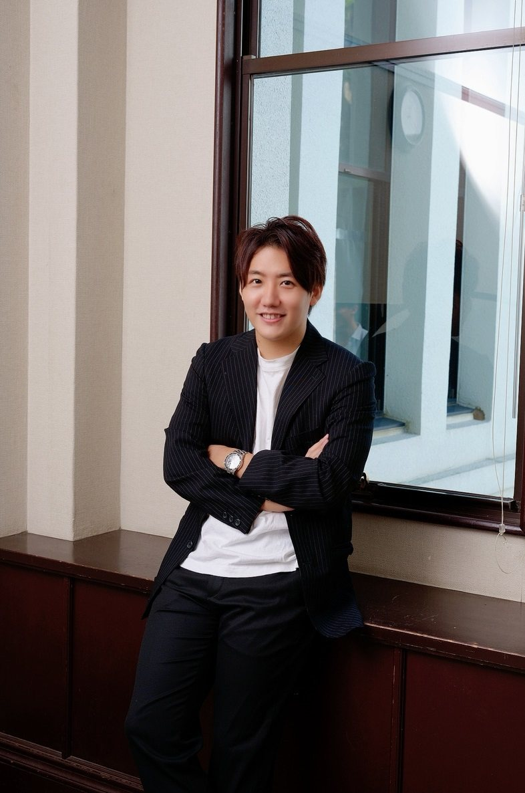
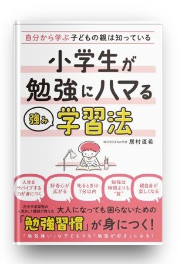
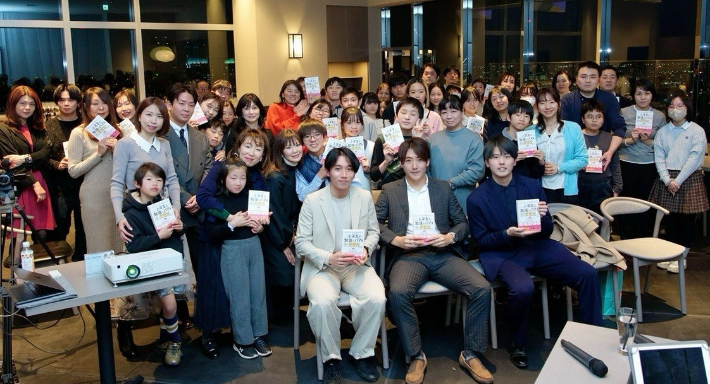

PROFILE
居村 直希
中学受験逆転合格プロデューサー®️｜株式会社Eden 代表取締役

私学教員・大手塾講師を経て、「一人一人の生徒を勝たせる」ことを信念に個別指導塾Edenをスタート。現在はプロ家庭教師のEdenの運営と代表講師として、年間50人以上の生徒を有名校合格に導いている。
都心では毎年「明大明治」「世田谷学園」「都市大付属」「攻玉社」「本郷」「芝」「高輪」など有名中学に全員合格させた実績を持つ。
2025年 合格実績（オンラインのみ）
麻布中学／本郷／高輪／世田谷学園／広尾学園／金光学園／浦和実業／静岡学園／東京農大／国学院久我山／函館ラサール／桐光学園／桐蔭学園／森村学園／開智所沢／埼玉栄医学部コース／筑紫女子学園／上宮／横浜創英／横浜雙葉／鎌倉女学院／穎明館／中部大春日／駒場東邦／栄東東大コース／智辯学園奈良カレッジ／神奈川大学附属／AICJ特待／広島国際特待／開智／城北／清風／東山／近大付属／吉祥寺女子清風中／日大豊山／安田学園／帝塚山／追手門大手前／北嶺／六甲／岡山白陵／岡山／逗子開成／鎌倉学園／大宮開成／栄光／高槻／滝川第二／洛星 など日本全国の有名校のほか20校
出版

2025年2月、総合法令出版より商業出版した『小学生が勉強にハマる強み学習法』は、紀伊国屋・有隣堂・ジュンク堂にて、総合・実用書のジャンルでベストセラーとして各店舗で1位を獲得している。
